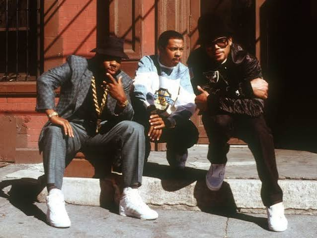

"Hip Hop ain't no black thing. It's a we thing! It was no Puerto Rican thing, no white thing, no black thing. You come to the party, behave yourself, do your thing and you catch a coup and I got you. And this is the frontrunner of Martin Luther King's dream, came in the form of Hip Hop." -DJ Kool Herc, Founder of Hip Hop
Hip-hop is a cultural movement that includes music, dance, visual art, fashion, and storytelling. It began in the Bronx, New York City, during the 1970s. Young African American, Latino, and Caribbean residents used hip-hop as a creative way to express themselves and r espond to poverty, discrimination, neighborhood violence, and limited opportunities.

Hip-hop is a cultural movement that includes music, dance, visual art, fashion, and storytelling. It began in the Bronx, New York City, during the 1970s. Young African American, Latino, and Caribbean residents used hip-hop as a creative way to express themselves and respond to poverty, discrimination, neighborhood violence, and limited opportunities.